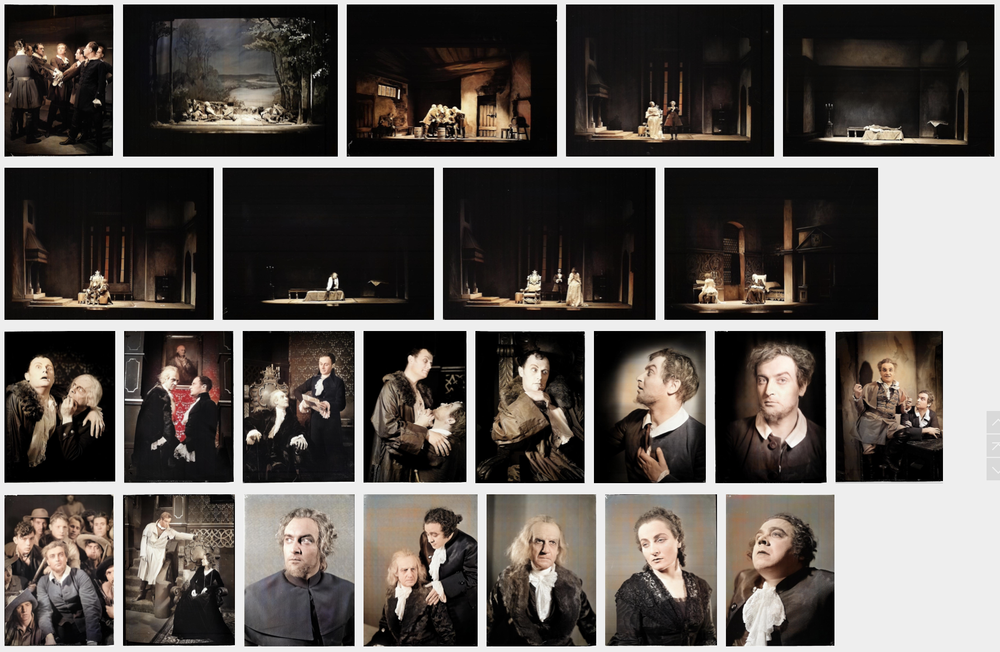
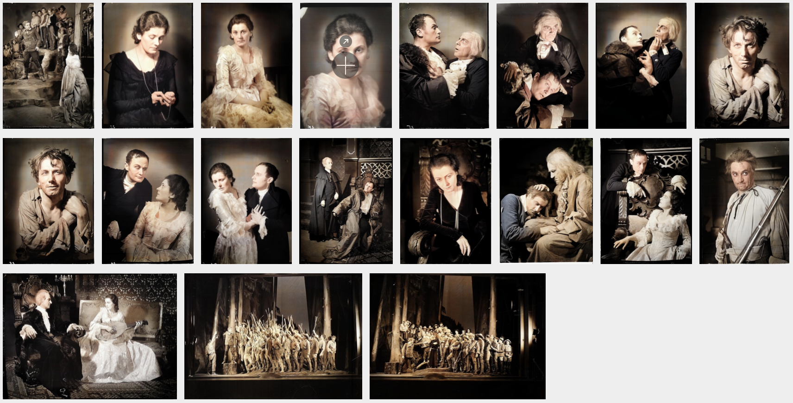
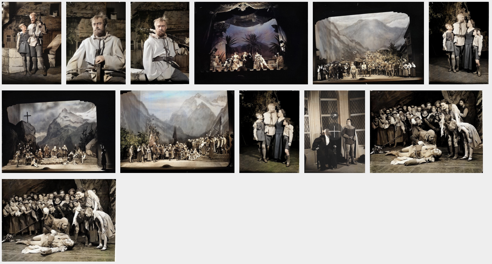

| title | lsgUri | date | desc | images |
|---|---|---|---|---|
"Die Räuber"@de |
http://slod.fiz-karlsruhe.de/labw-2-2602522 | "21. Mai 1933-10. November 1938" |
"Schauspiel Art und Datum der Aufführung: Neuinszenierungen, 21.05.1933 und 10.11.1938 Inszenierung: Gustav Deharde Bühnenbild: Felix Cziossek Kostüme: Ernst Pils Darin: Zeitungsausschnitt (Kritik)" |
 |
"Die Räuber"@de |
http://slod.fiz-karlsruhe.de/labw-2-2602523 | "21. Mai 1933" |
"Schauspiel Art und Datum der Aufführung: Neuinszenierung, 21.05.1933 Inszenierung: Gustav Deharde Bühnenbild: Felix Cziossek Kostüme: Ernst Pils" |
 |
"Wilhelm Tell"@la |
http://slod.fiz-karlsruhe.de/labw-2-2599395 | "10. November 1934" |
"Schauspiel Art und Datum der Aufführung: Neuinszenierung, 10.11.1934 Inszenierung: Otto Krauß Bühnenbild: Felix Cziossek Kostüme: Ernst Pils" |
 |